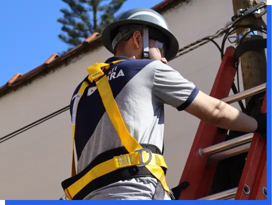

conheça nossos Serviços:
Porque contratar nossos serviços ?
Contratar a N-MultiFibra é escolher uma parceria consolidada ao longo de anos de excelência. Nos destacamos na entrega de soluções de fibra óptica e uma variedade de serviços, sempre mantendo altos padrões de qualidade.

Noticias recentes:
N-MultiFibra e o Incentivo ao Esporte: Patrocinadora Oficial da Copa Cotia de Jiu-Jitsu 🥋💪
Acreditamos que o esporte tem o poder de transformar vidas, promovendo disciplina, saúde e inclusão social. É por isso que a N-MultiFibra tem orgulho de apoiar e incentivar o esporte local, sendo patrocinadora oficial da Copa Cotia de Jiu-Jitsu, um evento de grande importância para a comunidade esportiva da região.